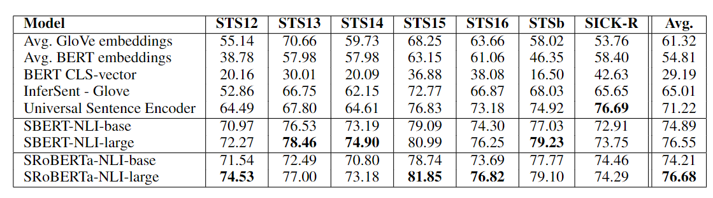
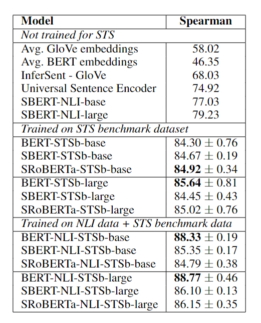
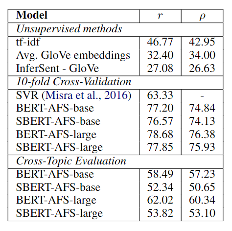
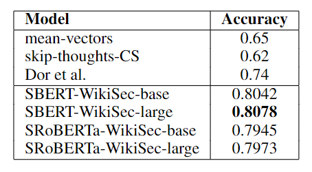
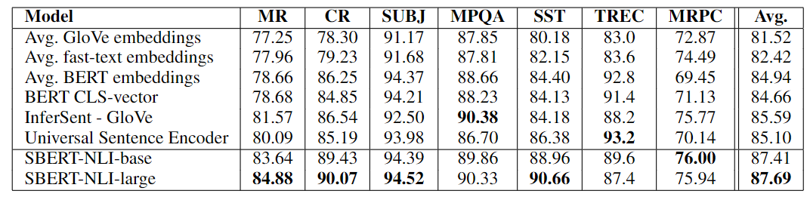
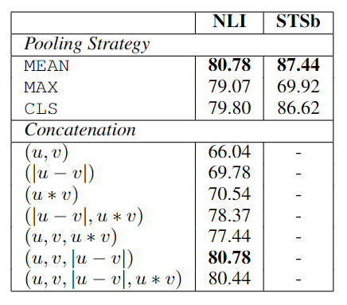
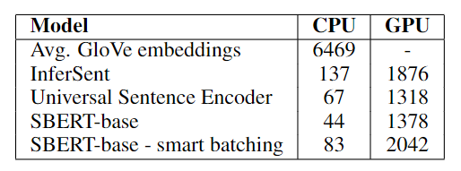

Sentence-BERT: 减小语义相似度的计算开销
摘要
BERT、RoBERTa 此类预训练模型虽然能够提升语义文本相似度（STS）任务的性能，但是在某些场景下会带来巨大的计算开销。例如，利用 BERT 从 10000 个句子的集合中找到最相似的两个句子，需要进行约 5000 万次推理，大约 65 个小时。因此，《Sentence-BERT: Sentence Embeddings using Siamese BERT-Networks》，来自 EMNLP 2019，提出了 Sentence-BERT（SBERT），使用孪生或三胞胎 BERT + 余弦相似度计算语义相似度。可以将上述例子的 65 小时降低至 5 秒钟，同时保证准确率。STS 和迁移任务上的实验证明，SBERT 和 SRoBERTa 已经成为句向量标识的 SOTA 方法。
介绍
BERT 的结构限制了其不适用于某些任务：大规模文本相似度比较、聚类、信息检索。摘要中已经提到了第一种的例子。聚类和信息检索通常需要将句子映射为一个固定维度的向量，使得相似的句子在语义空间中相近。BERT 虽然也能将句子映射为特定的向量，例如取最后一层 [CLS] 的 token embedding，或者做平均池化。但是，实验证明，这样的到的向量甚至差于 GloVe 嵌入的平均。
SBERT 通过以下步骤解决这个问题：
孪生 BERT 将句子映射为固定维度向量
使用相似度度量（余弦相似度、欧氏距离、曼哈顿距离...）
换而言之，即取消两个句子同时馈入网络的要求，利用相似度度量控制学习得到好的单个句子的嵌入。结构如下图所示：
两个句子被分别编码 + 平均池化得到向量表证后，构建计算语义相似度的分类任务（左图）或者回归任务（有图）。
作者在 NLI 数据上微调 SBERT，在 7 个 STS 任务上，SBERT 取得了 11.7 个点的提升，相较于 InferSent 和 Universal Sentence Encoder。在 SentEval 上，SBERT 分别取得了 2.1 和 2.6 个点的提升。
方法
SBERT 的核心步骤已经在上面介绍了，但还有一些细节需要考虑：
- 如何得到固定维度的向量：[CLS]/ 平均池化 / 最大池化
- 训练目标：分类 / 回归 / 三元组
其中，模型的结构（孪生、三胞胎）、训练目标与可用的训练数据息息相关。
分类目标：将两个句子向量及逐元素差 \(u,v,|u-v|\) 馈入 MLP，并进行 SoftMax 进行分类，公式为： \[ o_t=softmax(W_t(u,v,|u-v|)) \] 回归目标：与分类类似，区别在于计算 \(u,v\) 的余弦相似度，使用 MSE 损失。
三元组目标：给定一个原始句子 \(a\)，一个正面句子 \(p\)，一个负面例子 \(n\)，减小 \(a,p\) 之间的距离，增大 \(a,n\) 之间的距离，即要最小化下式的损失： \[ \max(||s_a-s_p||-||s_a-s_n||+\epsilon,0) \] 其中，\(s_x\) 为句子 \(x\) 的嵌入向量，\(||\cdot||\) 为句子度量，\(\epsilon\) 为边界，用以保证 \(s_p\) 至少 \(\epsilon\) 比 \(s_n\) 更靠近 \(s_a\)，即 \(||s_a-s_p||+\epsilon<||s_a-s_n||\)。当这个式子不成立时，损失为 0，参数不进行更新。实验中使用的距离度量为欧氏距离，\(\epsilon=1\)。
训练细节
作者使用 SNLI、Multi-Genre NLI 数据集训练 SBERT。其中，SNLI 数据集由 57 万个句子对 + 标签组成，MultiNLI 由 43 万个句子对组成，带有文本蕴含信息。
实验
在语义文本相似度任务上进行实验验证。传统方法通常学习一个（复杂的）回归函数，将句子嵌入映射到相似性分数。 然而，这些回归函数以句子对为输入，难以扩展且面临组合爆炸问题。SBERT 则总是使用余弦相似度来比较两个句子之间的相似度嵌入。 负曼哈顿距离和负欧几里得距离的实验结果也大致相同。
无监督 STS
不使用任何 STS 特定的训练数据。评估数据集为 STS tasks 2012 - 2016， STS benchmark，SICK-Relatedness。每个数据集的句子对包含 0 到 5 的的语义关联标签。评估指标上（两个相似度分数），不使用皮尔逊相关系数（Pearson correlation coefficient），因为它主要衡量随机变量间的线性相关性。而是使用斯皮尔曼等级相关系数（Spearman's rank correlation coefficient），它可以衡量等级变量间的单调性，因而更适用于 STS 场景。毕竟两个分数间的相关性不一定是线性的。
实验结果如下表所示。可以看到 naive 的 BERT embedding 差于 GloVe embedding，SBERT 和 SRoBERTa 几乎全面领先，除了 SICK-R。这可能与 Universal Sentence Encoder 训练的新闻、问答等语料有关。

监督 STS
使用 STS benchmark (STSb) 数据集进行训练。该数据集包括来自标题、新闻和论坛三个类别的 8,628 个句子对，分为训练集（5,749）、验证集（1,500）和测试集（1,379）。
实验结果如下表所示。作者实验了两种训练策略，只在 STSb 上进行训练和在 NLI 数据集上预训练，再在 STSb 数据集上微调。后者能够带来 1-2 个点的提升。可以看到 SBERT 和 BERT 之间的差距不大。

争论方面的相似性
Argument Facet Similarity （AFS）语料库注释了来自社交媒体对话的 6,000 个句子论点对，涉及三个有争议的主题：枪支管制、同性婚姻和死刑。数据的标签范围从 0（“不同主题”）到 5（“完全等效”）。 AFS 语料库中的相似性概念与 SemEval 的 STS 数据集中的相似性概念完全不同。 STS 数据通常是描述性的，而 AFS 数据是对话中的争论性摘录。要被认为是相似的，争论不仅必须提出相似的主张，而且还必须提供相似的论证。此外，AFS 中句子之间的词汇差距要大得多。因此，简单的无监督方法以及最先进的 STS 系统在该数据集上表现不佳。
作者使用 10 折交叉验证和跨主题评估（2 个主题用于训练，剩余一个用于评估）进行实验验证。10 折交叉验证设置中的 SBERT 的性能几乎与 BERT 相当。但是，在跨主题评估中， SBERT 的 Spearman 相关性下降了大约 7 个点的 。这可能是由于缺失主题的情况下，BERT 依然能够通过逐字符比较得到较好的结果，SBERT 只能从单一句子推断主题、主张等，这更具有挑战性。

维基百科章节
利用维基百科的章节构建三元组数据：假设文章同一部分中的句子在主题上比不同部分中的句子更接近，锚点和正例来自文章同一个部分，而负例来自同一篇文章的不同部分。作者在 180 万个训练三元组上训练 SBERT 一个 epoch，并在 222,957 个测试三元组上对其进行评估。测试三元组来自一组不同的 Wikipedia 文章。以准确率为评估指标。实验结果如下表所示。

可以看出，SBERT 明显优于 Dor 等人的 BiLSTM 方法。
SentEval
SentEval 是一个流行的工具包，用于评估句子嵌入的质量。 句子嵌入用作逻辑回归分类器的特征。 逻辑回归分类器在 10 折交叉验证设置中针对各种任务进行训练，并计算测试折的预测准确度。
尽管 SBERT 的句子嵌入的目标不是用于基于特征的迁移学习，微调是更好的方法。但是 SentEval 依然能够在不同任务上评估句子嵌入的质量。作者在 7 个 SentEval 的句子嵌入任务中比较了 SBERT 的性能：
- MR：电影评论情感预测
- CR：客户产品评论的情绪预测
- SUBJ：来自电影评论和情节句子的主题预测
- MPQA：来自新闻专线的短语级别意见极性分类
- SST：斯坦福情绪树库二分类
- TREC ：来自 TREC 的细粒度问题类型分类
- MRPC：来自平行新闻来源的微软研究院释义语料库
实验结果如下表所示。可以看到 SBERT 在 5/7 的任务上取得了最优性能，带来平均两个点的性能提升。尽管这种迁移学习并非是 SBERT 的目标，SBERT 依然取得了 SOTA 的性能。SBERT 明显比 Universal Sentence Encoder 差的数据集是 TREC 数据集。 Universal Sentence Encoder 在问答数据上进行了预训练，这似乎有利于 TREC 数据集的问题类型分类任务。

另外，这里的 BERT 的 [CLS] 优于 GloVe 嵌入平均，似乎与前文得到的结论相违背。这是因为任务设置不同。对于 STS 任务，论文使用余弦相似度来估计句子嵌入之间的相似度。余弦相似性平等地对待所有维度。相比之下，SentEval 将逻辑回归分类器与句子嵌入相匹配。这使得某些维度可以对分类结果产生更高或更低的影响。
观察上表还可以得出结论，BERT 的平均嵌入或者 [CLS] 符号嵌入搭配余弦相似度、欧氏距离、曼哈顿距离是不可行的。对于特征迁移学习，它们产生的结果也比 InferSent 或 Universal Sentence Encoder 稍差。然而，使用 SBERT 的孪生网络 + NLI 微调的方法能够得到 SOTA 的句嵌入。
消融实验
作者对池化策略、训练目标、拼接结果（分类目标时使用）进行了消融实验。其中，NLI 对应分类任务，STSb 对应回归任务。结果如下表所示。

可以看到，分类任务下，池化策略影响不大，用于分类的特征拼接结果影响很大。InferSent 和 Universal Sentence Encoder 都是使用 \((u,v,|u −v|,u ∗v)\)，然而，在 SBERT 里，\(u ∗v\) 的加入还会损失性能。其中，最重要的特征是逐元素差 \(|u - v|\)。
在回归任务下，池化策略具有很大的影响：最大池化的表现比平均池化或 CLS-token 策略要差得多。
计算效率
下表比较了不同模型在不同设备上每秒可以处理的句子嵌入。越高越好。可以看到 SBERT 在 GPU 上是最快的，相较于 InferSent 的 LSTM，这也得益于 Transformer 的并行性。

总结
这篇论文还是非常扎实的。从非常现实的计算效率问题出发，使用简单的方法，在不同的任务上取得与 BERT 相似甚至超越 BERT 的性能。其影响力也不容小觑，时至今日已经有 2000 + 的引用。